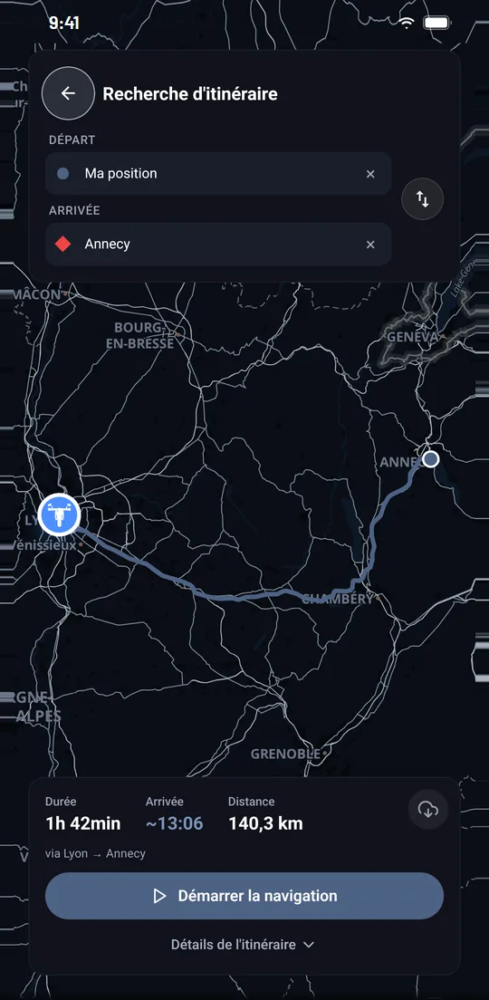
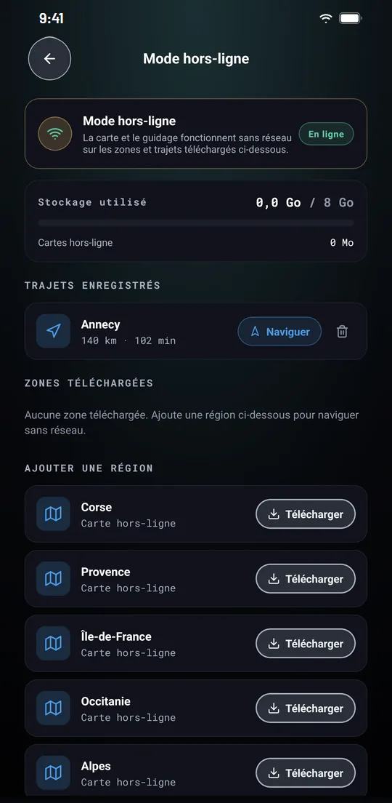
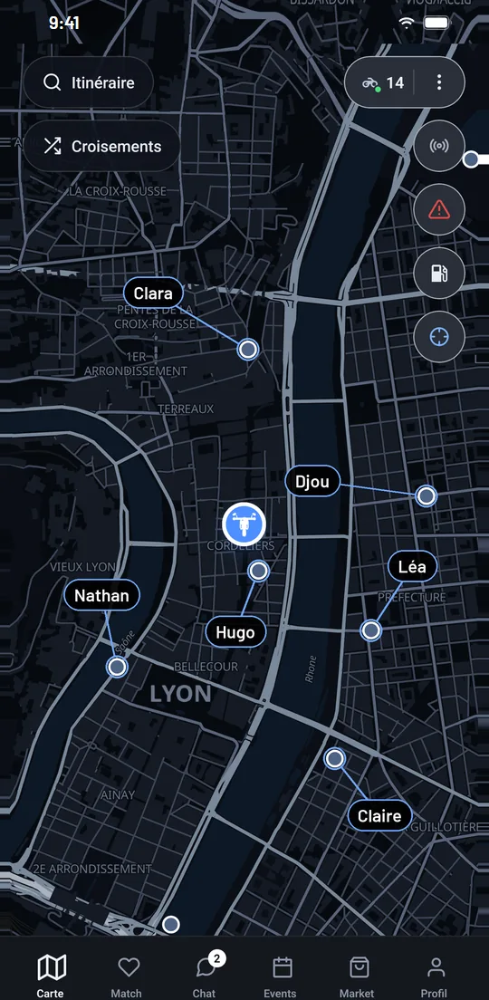

Guidage vocal virage par virage
Chaque changement de direction est annoncé à la voix, dans la langue de l'application. Le volume de la voix et la gestion de la musique se règlent, et le mode silencieux du téléphone est respecté.
IzenRide intègre un GPS pensé pour la moto : itinéraires à étapes, guidage vocal dans 9 langues, cartes hors ligne et stations-service sur la carte. La navigation est incluse pour l'ensemble des membres, sans abonnement.

Le guidage virage par virage, les itinéraires et les cartes hors ligne sont accessibles à l'ensemble des membres, avec ou sans Premium.
Chaque changement de direction est annoncé à la voix, dans la langue de l'application. Le volume de la voix et la gestion de la musique se règlent, et le mode silencieux du téléphone est respecté.
Ajoutez des arrêts à votre trajet : une pause, un col, un point de vue. En cas d'écart, l'itinéraire est recalculé automatiquement.
Téléchargez une région ou enregistrez un trajet : la carte et le guidage fonctionnent ensuite sans réseau sur les zones et trajets téléchargés.
Les instructions continuent lorsque l'application passe en arrière-plan, tant que la notification du guidage est affichée.
Stations-service sur la carte avec les prix du jour en France, en Italie, au Danemark et en Islande. Bornes de recharge en France, avec un tarif indicatif.
Chaque trajet est archivé avec sa distance, sa durée et sa vitesse moyenne. Vos trajets peuvent être supprimés à tout moment.
Dans les gorges, en altitude ou de l'autre côté d'une frontière, le réseau mobile manque souvent au mauvais moment. Le mode hors ligne d'IzenRide vous permet de tout préparer avant de partir.
La carte et le guidage fonctionnent sans réseau sur les zones et trajets téléchargés. Pensez à les télécharger avant le départ, idéalement en Wi-Fi.

Sécurité routière. Ne manipulez jamais l'application en conduisant : réglez votre trajet avant de partir. Le guidage et les informations affichées sont fournis à titre indicatif et ne remplacent ni votre vigilance ni le respect du code de la route.

Le guidage GPS virage par virage est fourni à l'ensemble des membres. L'abonnement Premium (9,99 € par mois ou 79,99 € par an, sans engagement) concerne les fonctions communautaires.
Comparer l'offre gratuite et Premium| Fonction | Gratuit | Premium |
|---|---|---|
| Guidage vocal et itinéraires à étapes | Inclus | Inclus |
| Cartes hors ligne et historique des trajets | Inclus | Inclus |
| Stations-service et bornes de recharge | Inclus | Inclus |
| Riders sur la carte en temps réel | Non inclus | Inclus |
| Historique de position conservé | 7 jours | 30 jours |
Une autre question ? Écrivez-nous à support@izenride.com.
Oui. La navigation guidée virage par virage est accessible à l'ensemble des membres, avec ou sans abonnement Premium.
Oui, sur les zones et les trajets téléchargés à l'avance depuis le mode hors ligne de l'application. Téléchargez la région avant de partir dans un secteur mal couvert.
Oui. Lorsque l'application passe en arrière-plan, les instructions continuent tant que la notification du guidage est affichée.
En 9 langues : français, anglais, allemand, espagnol, italien, néerlandais, polonais, roumain et grec.
Oui. Les stations-service apparaissent sur la carte avec les prix du jour en France, en Italie, au Danemark et en Islande. Les bornes de recharge sont affichées en France, avec un tarif indicatif.
IzenRide est disponible gratuitement sur Android (Google Play) et sur iPhone (App Store).
Disponible gratuitement sur Android et iPhone, en 9 langues. Créez votre compte en quelques minutes et paramétrez votre visibilité dès la première utilisation.